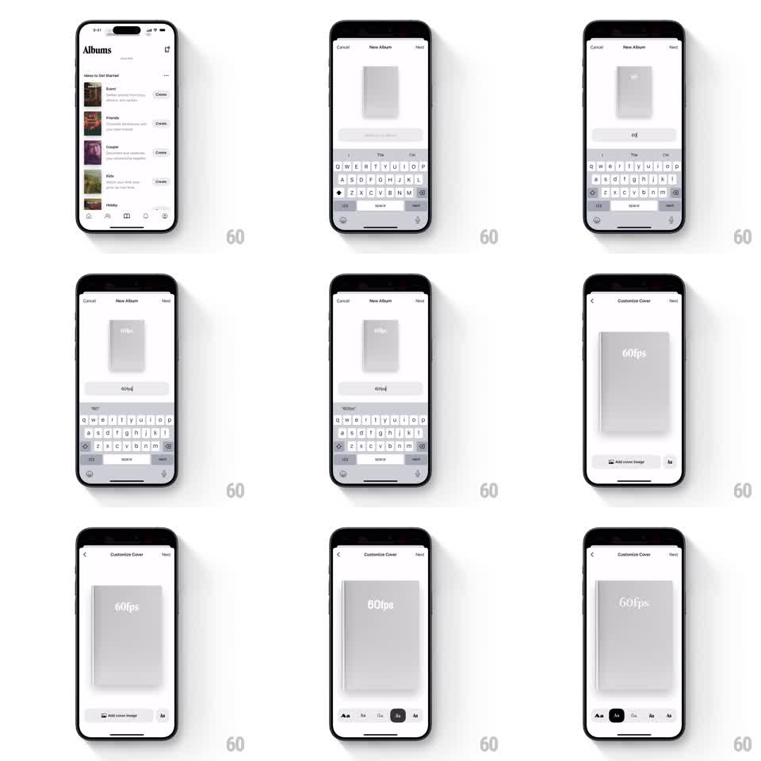

Media
Frame-by-frame

Rebuild this interaction 1:1: Retro's new album flow - typing the album name renders it live onto a 3D book cover in the creation sheet, then transitions to a full customize-cover screen with font options.

Rebuild this interaction 1:1: Retro's new album flow - typing the album name renders it live onto a 3D book cover in the creation sheet, then transitions to a full customize-cover screen with font options.
## Integration
Integration: stack-agnostic spec - springs given as stiffness/damping, timed motions as duration + curve; map every value to your framework and animation library of choice.
## Scene
Albums list ("Ideas to Get Started" template rows with Create buttons). "New Album" sheet: a small 3D book (gray cloth cover, visible spine and page edges) centered above a title field with the keyboard up. "Customize Cover" screen: the same book large, its title on the cover, an "Add cover image" button, and a font-picker row (Aa swatches) at the bottom.
## Motion spec
Pattern: live type-on-object with a shared-element push.
- In the sheet, every keystroke renders onto the 3D book cover within a frame - the cover text tracks the field exactly, including deletes; the field cursor and cover text stay in sync.
- The book idles with a slight 3D sway (rotateY +-4deg, 3s sine) so the spine and pages read as dimensional.
- Tap Next: the book becomes the shared element - it grows and slides to center stage (spring stiffness ~280, damping ~26) as the sheet pushes to the Customize screen; the keyboard dismisses (250ms) in the same beat.
- Font swatches apply live: tap an Aa and the cover title re-sets in that face with a 200ms crossfade; the selected swatch gets a dark chip.
- "Add cover image" fades the cloth to the picked photo (300ms), the title staying legible on top.
## Calibration
- Cover text is real typesetting on the 3D surface - it wraps and scales with the book, never a flat overlay that ignores the sway.
- The shared-element handoff is the star: no cut between the small book and the large one.
## Reduced motion
Book crossfades between screens; cover text updates without sway.
## Don't miss
- The book shows thickness: spine on the left, page block on the right edge, cloth texture on the cover.
- The title lands in the cover's upper third, centered, in the cover's own perspective.